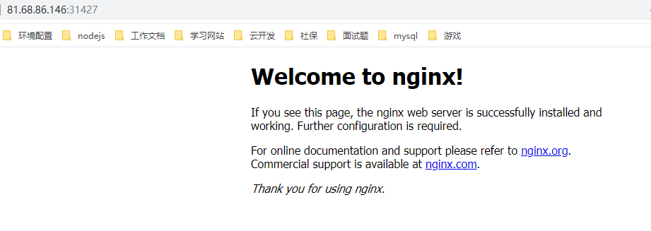
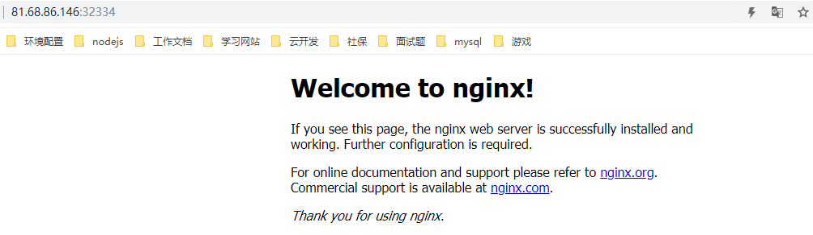

k8s的service
k8s创建service，然后外部可以访问service从而实现访问pod和容器。
service 主要有三种类型，一种叫ClusterIP， 一种叫NodePort类型，一种叫外部的LoadBalancer
ClusterIP只能是cluster集群内部访问，NodePort可以支持外部访问。
kubectl expose 可以导出一个service
我们查看下pod信息
1 | kubectl get pods -o wide -n default |
显示如下
1 | NAME READY STATUS RESTARTS AGE IP NODE NOMINATED NODE READINESS GATES |
然后我们导出busybox和nginx服务
1 | kubectl expose pods nginx |
然后我们可以通过命令查看service
1 | kubectl get svc |
会显示如下
1 | NAME TYPE CLUSTER-IP EXTERNAL-IP PORT(S) AGE |
可以看到service的clusterIP
我们在k8s任何一个节点都可以访问这个地址
1 | curl 10.99.158.252:80 |
会输出nginx的页面信息
另外，当我们使用kubectl命令时可以设置自动补全功能
1 | source <(kubectl completion bash) |
设置后kubectl get 然后按下tab就可以自动补全了。
利用deployment启动python网站服务
先实现该pod文件
1 | apiVersion: extensions/v1beta1 |
用命令启动deployment
1 | kubectl create -f deployment_python_http.yml |
将deployment导出为service
1 | kubectl expose deployment service-test |
然后我们查看service信息
1 | kubectl get svc |
显示结果
1 | NAME TYPE CLUSTER-IP EXTERNAL-IP PORT(S) AGE |
我的k8s是单节点的，如果有其他节点，可以在任意节点执行curl命令指定地址和端口
1 | curl 10.108.183.252:8080 |
显示
1 | <p>Hello from service-test-85b6644b4d-6khz8</p> |
deployment支持热更新
1 | kubectl edit deployment service-test |
之后会显示deployment的yml信息，修改后保存，之后service-test就自动热更新了。无需重启服务。
NodePort 网络
我们先实现一个nginx_pod.yml文件，定义Pod
1 | apiVersion: v1 |
定义了一个名字为nginx-pod的pod，labels的key为app，value为nginx。然后定义了容器的名字为nginx-container，镜像为nginx， 端口为80
我们启动这个pod
1 | kubectl create -f nginx_pod.yml |
然后查看pod
1 | kubectl get pods -o wide |
接下来将pod导出service,选择类型NodePort
1 | kubectl expose pods nginx-pod --type=NodePort |
查看service信息
1 | kubectl get svc |
可以看到nginx-pod这个服务的类型为NodePort
1 | NAME TYPE CLUSTER-IP EXTERNAL-IP PORT(S) AGE |
我们通过任意一个节点的ip加上端口号31427即可访问nginx-pod的服务。查看节点信息
1 | kubectl get node -o wide |
可以看到节点信息
1 | NAME STATUS ROLES AGE VERSION INTERNAL-IP EXTERNAL-IP OS-IMAGE KERNEL-VERSION CONTAINER-RUNTIME |
172.17.0.9为内网IP，我通过外网ip和端口31427就可以访问。

通过yml文件创建svc
我们先将之前创建的nginx的service删除
1 | kubectl delete svc |
然后我们实现一个nginx的service的yml文件
1 | apiVersion: v1 |
targetPort指定的端口名字为nginx-port， selector指定选择哪个pod，type指定service的类型
nodePort和port分别是service的端口和映射的端口
启动service
1 | kubectl create -f service_nginx.yml |
启动服务后，可以通过节点地址和端口访问该nginx服务。
1 | kubectl get svc |
显示服务启动成功
1 | NAME TYPE CLUSTER-IP EXTERNAL-IP PORT(S) AGE |
接着访问指定网址和端口就能查看nginx服务了。

感谢关注我的公众号